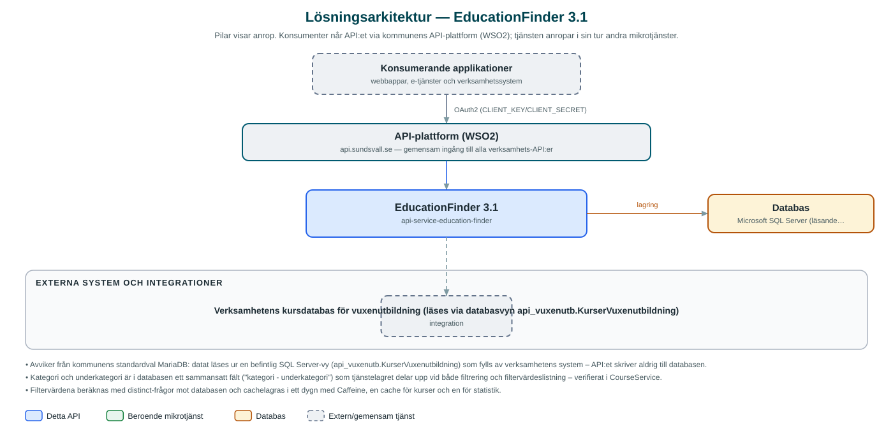

EducationFinder
Sök- och statistik-API för kommunens vuxenutbildningsutbud – kurser kan filtreras på kategori, nivå, studieort med mera och sammanställas till statistik.
Om API:et
EducationFinder gör kommunens utbud av vuxenutbildning sökbart för e-tjänster och webbplatser. API:et exponerar kurser med uppgifter som namn, kategori, nivå, omfattning, poäng, studieort, anordnare, start- och slutdatum, antal platser och sista ansökningsdag, med fritextsökning, filtrering, sortering och paginering.
För varje filterattribut (kategori, underkategori, nivå, anordnare, omfattning, poäng, studieort) kan giltiga värden hämtas dynamiskt – de tas fram ur databasens faktiska innehåll och cachelagras i ett dygn. Kategorier och underkategorier härleds ur databasens sammansatta kategorifält.
Statistikdelen sammanställer pågående, planerade och avslutade kurser samt tillgängliga platser och total kapacitet inom ett valt tidsintervall, filtrerat på samma attribut. Datat läses ur en färdig databasvy som fylls på av verksamhetens system – API:et är renodlat läsande.
Det här gör API:et
- Kurssökning – Fritextsökning i kurskod, namn, information och kategori, kombinerad med filtrering på bland annat nivå, studieort och anordnare.
- Paginering och sortering – Resultat hämtas sida för sida med valfri sortering på kursens attribut.
- Dynamiska filtervärden – Giltiga värden per filterattribut hämtas ur databasens aktuella innehåll och cachelagras i ett dygn.
- Kursdetaljer – Enskild kurs hämtas per id med fullständiga uppgifter inklusive ansökningslänk.
- Statistik – Antal pågående, planerade och avslutade kurser samt platser och kapacitet inom ett valt tidsintervall.
API-dokumentation
API:ets samtliga resurser, parametrar och datamodeller finns beskrivna i en OpenAPI-specifikation som är hämtad ur källkodsförrådet. Den kan utforskas interaktivt i Swagger UI eller laddas ner som YAML.
Teknisk dokumentation
Nedan beskrivs hur tjänsten är uppbyggd, vilka andra tjänster den anropar och vad som krävs för att driftsätta den. Informationen är härledd ur källkoden och dess konfiguration på GitHub.
Arkitektur

API:et är en mikrotjänst (Java 25 (via dept44-föräldern), Spring Boot via kommunens gemensamma tjänsteplattform dept44 (8.0.8), byggd med Maven). Konsumenter når tjänsten via kommunens gemensamma API-plattform (WSO2) på api.sundsvall.se – tjänsten anropas aldrig direkt. Lagring: Microsoft SQL Server (läsande åtkomst mot en färdig vy, inga egna migrationer). Övriga integrationer som förekommer i koden: Verksamhetens kursdatabas för vuxenutbildning (läses via databasvyn api_vuxenutb.KurserVuxenutbildning).
Teknikstack
- Språk: Java 25 (via dept44-föräldern)
- Ramverk: Spring Boot via kommunens gemensamma tjänsteplattform dept44 (8.0.8), byggd med Maven
- Databas: Microsoft SQL Server (läsande åtkomst mot en färdig vy, inga egna migrationer)
- Övrigt: Caffeine-cache för filtervärden, JPA Specifications för dynamisk filtrering
Beroenden till andra mikrotjänster
Inga anrop till andra mikrotjänster hittades i källkodens konfiguration.
Konfiguration och driftsättning
- application.yml med SQL Server-anslutning (JDBC-URL, användarnamn, lösenord)
- Cacheinställningar för filtervärden (maximalt 1000 poster, 24 timmars livslängd)
- Ingen Flyway – databasschemat ägs av källsystemet och valideras endast av JPA
- Anrop görs per kommun – municipalityId ingår i alla API-vägar
Noterbart ur källkoden
- Avviker från kommunens standardval MariaDB: datat läses ur en befintlig SQL Server-vy (api_vuxenutb.KurserVuxenutbildning) som fylls av verksamhetens system – API:et skriver aldrig till databasen.
- Kategori och underkategori är i databasen ett sammansatt fält ("kategori - underkategori") som tjänstelagret delar upp vid både filtrering och filtervärdeslistning – verifierat i CourseService.
- Filtervärdena beräknas med distinct-frågor mot databasen och cachelagras i ett dygn med Caffeine, en cache för kurser och en för statistik.
- OpenAPI-specens info.title är "api-education-finder"; specen ligger incheckad under src/main/resources/api/openapi.yaml.
Källkod
Källkoden är öppen och finns hos Sundsvalls kommun på GitHub. I källkodsförrådet finns även instruktioner för att klona, konfigurera och starta tjänsten i egen miljö.